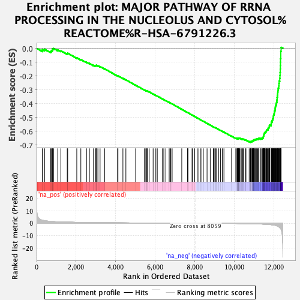
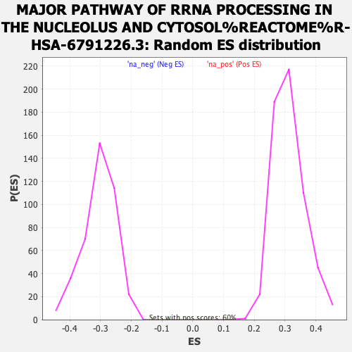

| | | Dataset | gata3_ranked_genelist |
| Phenotype | NoPhenotypeAvailable |
| Upregulated in class | na_neg |
| GeneSet | MAJOR PATHWAY OF RRNA PROCESSING IN THE NUCLEOLUS AND CYTOSOL%REACTOME%R-HSA-6791226.3 |
| Enrichment Score (ES) | -0.6796826 |
| Normalized Enrichment Score (NES) | -2.2397664 |
| Nominal p-value | 0.0 |
| FDR q-value | 0.0 |
| FWER p-Value | 0.0 |
Table: GSEA Results Summary

Fig 1: Enrichment plot: MAJOR PATHWAY OF RRNA PROCESSING IN THE NUCLEOLUS AND CYTOSOL%REACTOME%R-HSA-6791226.3
Profile of the Running ES Score & Positions of GeneSet Members on the Rank Ordered List
| SYMBOL | RANK IN GENE LIST | RANK METRIC SCORE | RUNNING ES | CORE ENRICHMENT | | 1 | RPL11 | 288 | 2.449 | -0.0088 | No |
| 2 | RPS24 | 406 | 2.006 | -0.0063 | No |
| 3 | RPS15A | 714 | 1.482 | -0.0225 | No |
| 4 | RPL7A | 752 | 1.432 | -0.0169 | No |
| 5 | RPL15 | 796 | 1.385 | -0.0122 | No |
| 6 | RPL34 | 797 | 1.384 | -0.0039 | No |
| 7 | RPS3A | 865 | 1.308 | -0.0015 | No |
| 8 | RPS4X | 1071 | 1.137 | -0.0114 | No |
| 9 | RPL36A | 1228 | 1.037 | -0.0179 | No |
| 10 | RPL5 | 1551 | 0.891 | -0.0388 | No |
| 11 | RPL37A | 1573 | 0.881 | -0.0352 | No |
| 12 | RPL32 | 2033 | 0.722 | -0.0683 | No |
| 13 | RPL17 | 2239 | 0.662 | -0.0810 | No |
| 14 | RPL26 | 2527 | 0.594 | -0.1008 | No |
| 15 | RIOK3 | 2672 | 0.560 | -0.1092 | No |
| 16 | RPS3 | 2879 | 0.518 | -0.1229 | No |
| 17 | RPL29 | 2965 | 0.500 | -0.1268 | No |
| 18 | RPL7 | 2973 | 0.499 | -0.1244 | No |
| 19 | RPS8 | 3016 | 0.492 | -0.1249 | No |
| 20 | RPS27L | 3021 | 0.491 | -0.1223 | No |
| 21 | KRR1 | 3102 | 0.478 | -0.1259 | No |
| 22 | RPL6 | 3212 | 0.461 | -0.1320 | No |
| 23 | RPS14 | 3442 | 0.426 | -0.1481 | No |
| 24 | XRN2 | 4098 | 0.338 | -0.1994 | No |
| 25 | RPL31 | 4118 | 0.336 | -0.1990 | No |
| 26 | EXOSC10 | 4368 | 0.307 | -0.2174 | No |
| 27 | RPP21 | 4518 | 0.291 | -0.2278 | No |
| 28 | RPS7 | 5012 | 0.238 | -0.2665 | No |
| 29 | RPS10 | 5456 | 0.196 | -0.3014 | No |
| 30 | RPP25 | 5527 | 0.189 | -0.3059 | No |
| 31 | BMS1 | 5552 | 0.186 | -0.3068 | No |
| 32 | RPS11 | 5585 | 0.184 | -0.3083 | No |
| 33 | RPL3 | 5613 | 0.181 | -0.3094 | No |
| 34 | RPL38 | 5696 | 0.174 | -0.3150 | No |
| 35 | UTP14C | 5897 | 0.158 | -0.3304 | No |
| 36 | RPS20 | 6034 | 0.145 | -0.3406 | No |
| 37 | RPL35A | 6107 | 0.140 | -0.3456 | No |
| 38 | RPS6 | 6369 | 0.118 | -0.3661 | No |
| 39 | RPL39L | 6438 | 0.114 | -0.3710 | No |
| 40 | RRP36 | 6539 | 0.105 | -0.3785 | No |
| 41 | RPL22 | 6708 | 0.093 | -0.3916 | No |
| 42 | EXOSC3 | 6751 | 0.090 | -0.3945 | No |
| 43 | RPL35 | 6793 | 0.087 | -0.3973 | No |
| 44 | RPL10A | 6859 | 0.081 | -0.4021 | No |
| 45 | RPS17 | 7346 | 0.048 | -0.4414 | No |
| 46 | EXOSC1 | 7640 | 0.028 | -0.4651 | No |
| 47 | NOL12 | 7653 | 0.026 | -0.4659 | No |
| 48 | RPS15 | 7654 | 0.026 | -0.4657 | No |
| 49 | EMG1 | 7818 | 0.015 | -0.4789 | No |
| 50 | C1D | 7879 | 0.012 | -0.4837 | No |
| 51 | RPL26L1 | 7999 | 0.003 | -0.4934 | No |
| 52 | EXOSC8 | 8130 | -0.005 | -0.5039 | No |
| 53 | RPS27A | 8212 | -0.011 | -0.5105 | No |
| 54 | RPS18 | 8289 | -0.018 | -0.5166 | No |
| 55 | RPL13 | 8364 | -0.024 | -0.5224 | No |
| 56 | RPP14 | 8436 | -0.029 | -0.5280 | No |
| 57 | RPL36AL | 8626 | -0.047 | -0.5431 | No |
| 58 | RPL18 | 8786 | -0.062 | -0.5557 | No |
| 59 | CSNK1D | 8940 | -0.076 | -0.5677 | No |
| 60 | RPL36 | 8981 | -0.079 | -0.5705 | No |
| 61 | MPHOSPH10 | 9026 | -0.084 | -0.5736 | No |
| 62 | EXOSC6 | 9048 | -0.087 | -0.5748 | No |
| 63 | EXOSC9 | 9087 | -0.091 | -0.5773 | No |
| 64 | RPL24 | 9208 | -0.104 | -0.5865 | No |
| 65 | RPP30 | 9303 | -0.116 | -0.5934 | No |
| 66 | RPL39 | 9397 | -0.128 | -0.6002 | No |
| 67 | CSNK1E | 9480 | -0.136 | -0.6061 | No |
| 68 | MTREX | 9875 | -0.196 | -0.6370 | No |
| 69 | ISG20L2 | 9881 | -0.197 | -0.6362 | No |
| 70 | RPL27A | 10082 | -0.229 | -0.6511 | No |
| 71 | UTP11 | 10092 | -0.230 | -0.6505 | No |
| 72 | NIP7 | 10144 | -0.241 | -0.6532 | No |
| 73 | ERI1 | 10166 | -0.244 | -0.6534 | No |
| 74 | RPS19 | 10172 | -0.245 | -0.6524 | No |
| 75 | RPP38 | 10187 | -0.248 | -0.6520 | No |
| 76 | RPL37 | 10211 | -0.253 | -0.6524 | No |
| 77 | UTP25 | 10214 | -0.253 | -0.6510 | No |
| 78 | RPL30 | 10228 | -0.257 | -0.6506 | No |
| 79 | SENP3 | 10257 | -0.260 | -0.6513 | No |
| 80 | RRP7A | 10275 | -0.265 | -0.6511 | No |
| 81 | DIS3 | 10295 | -0.270 | -0.6510 | No |
| 82 | RPL21 | 10382 | -0.290 | -0.6563 | No |
| 83 | DDX49 | 10394 | -0.291 | -0.6555 | No |
| 84 | DDX52 | 10420 | -0.297 | -0.6557 | No |
| 85 | MPHOSPH6 | 10460 | -0.306 | -0.6571 | No |
| 86 | RPL27 | 10565 | -0.332 | -0.6635 | No |
| 87 | UTP18 | 10594 | -0.341 | -0.6638 | No |
| 88 | RPL14 | 10757 | -0.390 | -0.6746 | No |
| 89 | RPL23 | 10820 | -0.413 | -0.6772 | Yes |
| 90 | FTSJ3 | 10828 | -0.416 | -0.6753 | Yes |
| 91 | NOL11 | 10856 | -0.428 | -0.6749 | Yes |
| 92 | UTP15 | 10859 | -0.429 | -0.6725 | Yes |
| 93 | BUD23 | 10901 | -0.446 | -0.6732 | Yes |
| 94 | RPL22L1 | 10919 | -0.457 | -0.6719 | Yes |
| 95 | FAU | 10941 | -0.467 | -0.6708 | Yes |
| 96 | UTP3 | 10946 | -0.469 | -0.6683 | Yes |
| 97 | NOL9 | 10975 | -0.480 | -0.6677 | Yes |
| 98 | WDR18 | 10980 | -0.482 | -0.6652 | Yes |
| 99 | RIOK2 | 10983 | -0.483 | -0.6624 | Yes |
| 100 | EXOSC7 | 11025 | -0.504 | -0.6628 | Yes |
| 101 | LAS1L | 11045 | -0.510 | -0.6613 | Yes |
| 102 | RCL1 | 11079 | -0.528 | -0.6608 | Yes |
| 103 | RPP40 | 11105 | -0.541 | -0.6596 | Yes |
| 104 | NOC4L | 11115 | -0.548 | -0.6570 | Yes |
| 105 | RPS29 | 11147 | -0.563 | -0.6562 | Yes |
| 106 | WDR36 | 11185 | -0.584 | -0.6557 | Yes |
| 107 | PELP1 | 11232 | -0.610 | -0.6558 | Yes |
| 108 | RIOK1 | 11244 | -0.615 | -0.6530 | Yes |
| 109 | NOB1 | 11251 | -0.619 | -0.6498 | Yes |
| 110 | UBA52 | 11349 | -0.669 | -0.6537 | Yes |
| 111 | TEX10 | 11350 | -0.669 | -0.6497 | Yes |
| 112 | EXOSC4 | 11417 | -0.714 | -0.6508 | Yes |
| 113 | FBL | 11441 | -0.731 | -0.6483 | Yes |
| 114 | WDR12 | 11466 | -0.746 | -0.6458 | Yes |
| 115 | RPL4 | 11474 | -0.752 | -0.6419 | Yes |
| 116 | WDR75 | 11476 | -0.753 | -0.6375 | Yes |
| 117 | HEATR1 | 11481 | -0.755 | -0.6333 | Yes |
| 118 | RBM28 | 11497 | -0.764 | -0.6300 | Yes |
| 119 | UTP14A | 11499 | -0.766 | -0.6255 | Yes |
| 120 | FCF1 | 11511 | -0.774 | -0.6217 | Yes |
| 121 | RPL10 | 11518 | -0.779 | -0.6176 | Yes |
| 122 | PWP2 | 11524 | -0.788 | -0.6133 | Yes |
| 123 | RPS21 | 11548 | -0.808 | -0.6103 | Yes |
| 124 | RPL12 | 11561 | -0.819 | -0.6064 | Yes |
| 125 | RPS27 | 11598 | -0.853 | -0.6042 | Yes |
| 126 | WDR46 | 11612 | -0.867 | -0.6001 | Yes |
| 127 | RPS9 | 11629 | -0.885 | -0.5961 | Yes |
| 128 | RPS16 | 11639 | -0.891 | -0.5915 | Yes |
| 129 | IMP3 | 11670 | -0.926 | -0.5884 | Yes |
| 130 | RPS25 | 11711 | -0.983 | -0.5858 | Yes |
| 131 | EXOSC2 | 11716 | -0.991 | -0.5802 | Yes |
| 132 | BYSL | 11721 | -0.997 | -0.5746 | Yes |
| 133 | TBL3 | 11761 | -1.045 | -0.5715 | Yes |
| 134 | DDX47 | 11777 | -1.069 | -0.5663 | Yes |
| 135 | RPL8 | 11779 | -1.071 | -0.5600 | Yes |
| 136 | RPLP2 | 11794 | -1.084 | -0.5547 | Yes |
| 137 | RPS13 | 11868 | -1.203 | -0.5534 | Yes |
| 138 | RPL19 | 11871 | -1.209 | -0.5464 | Yes |
| 139 | UTP20 | 11874 | -1.209 | -0.5393 | Yes |
| 140 | IMP4 | 11882 | -1.224 | -0.5326 | Yes |
| 141 | RRP1 | 11920 | -1.298 | -0.5278 | Yes |
| 142 | DHX37 | 11924 | -1.305 | -0.5203 | Yes |
| 143 | EXOSC5 | 11943 | -1.348 | -0.5137 | Yes |
| 144 | RPS2 | 11951 | -1.358 | -0.5061 | Yes |
| 145 | RPL41 | 11984 | -1.419 | -0.5003 | Yes |
| 146 | RPSA | 11985 | -1.421 | -0.4918 | Yes |
| 147 | UTP6 | 11992 | -1.448 | -0.4836 | Yes |
| 148 | NOL6 | 12010 | -1.516 | -0.4759 | Yes |
| 149 | NCL | 12025 | -1.546 | -0.4678 | Yes |
| 150 | SNU13 | 12032 | -1.575 | -0.4589 | Yes |
| 151 | RPLP0 | 12048 | -1.615 | -0.4505 | Yes |
| 152 | DCAF13 | 12071 | -1.726 | -0.4419 | Yes |
| 153 | PDCD11 | 12073 | -1.735 | -0.4317 | Yes |
| 154 | RPS28 | 12083 | -1.769 | -0.4218 | Yes |
| 155 | NOP58 | 12097 | -1.833 | -0.4119 | Yes |
| 156 | PNO1 | 12123 | -1.946 | -0.4023 | Yes |
| 157 | WDR3 | 12141 | -2.020 | -0.3917 | Yes |
| 158 | UTP4 | 12159 | -2.094 | -0.3805 | Yes |
| 159 | RPS5 | 12167 | -2.118 | -0.3684 | Yes |
| 160 | TSR1 | 12172 | -2.178 | -0.3557 | Yes |
| 161 | NOP14 | 12184 | -2.274 | -0.3430 | Yes |
| 162 | WDR43 | 12195 | -2.348 | -0.3298 | Yes |
| 163 | RPS23 | 12203 | -2.422 | -0.3159 | Yes |
| 164 | RRP9 | 12216 | -2.534 | -0.3018 | Yes |
| 165 | LTV1 | 12229 | -2.630 | -0.2870 | Yes |
| 166 | RPL13A | 12256 | -2.934 | -0.2716 | Yes |
| 167 | RPLP1 | 12264 | -3.012 | -0.2542 | Yes |
| 168 | PES1 | 12274 | -3.104 | -0.2364 | Yes |
| 169 | NOP56 | 12304 | -3.555 | -0.2175 | Yes |
| 170 | EBNA1BP2 | 12316 | -3.792 | -0.1957 | Yes |
| 171 | RPS26 | 12323 | -3.895 | -0.1729 | Yes |
| 172 | GNL3 | 12332 | -4.085 | -0.1492 | Yes |
| 173 | RPL23A | 12337 | -4.135 | -0.1248 | Yes |
| 174 | RPL18A | 12341 | -4.207 | -0.0999 | Yes |
| 175 | RPL28 | 12344 | -4.239 | -0.0747 | Yes |
| 176 | RPS12 | 12357 | -4.475 | -0.0489 | Yes |
| 177 | BOP1 | 12358 | -4.494 | -0.0221 | Yes |
| 178 | DDX21 | 12375 | -5.113 | 0.0072 | Yes |
Table: GSEA details [plain text format]

Fig 2: MAJOR PATHWAY OF RRNA PROCESSING IN THE NUCLEOLUS AND CYTOSOL%REACTOME%R-HSA-6791226.3: Random ES distribution
Gene set null distribution of ES for MAJOR PATHWAY OF RRNA PROCESSING IN THE NUCLEOLUS AND CYTOSOL%REACTOME%R-HSA-6791226.3